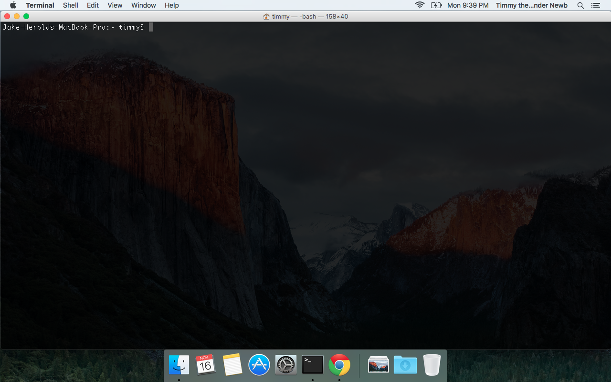

Welcome to coding things! Here you will get your computer set up to learn the wonderful world of gitHub!
First things first. Go to your spotlight search and look for "terminal". Open it up, and you should see something like this appear:

Play with settings as you like. Try a few commands like ls(list: shows all the files in the folder you're in), cd (change directory: goes to a new folder), or pwd (print working directory: shows where you are from the very root of your computer).
There is a lot to learn about terminal, but we won't get into it all here. Play around until you know how to change directories, and get back to where you started. We'll go into more detail later, as we need different commands for different steps.